一个vue从无到有的搭建过程。
一、不论是webpack还是vue，最初的第一步就是安装node.js。它是基石。
从官网下载你需要的安装包：官网下载链接：http://nodejs.cn/download/
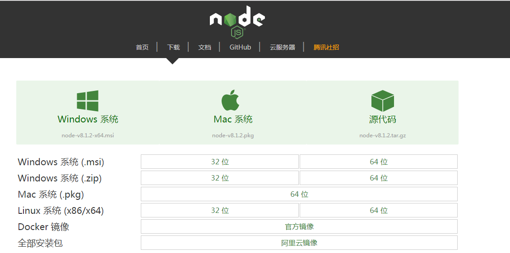
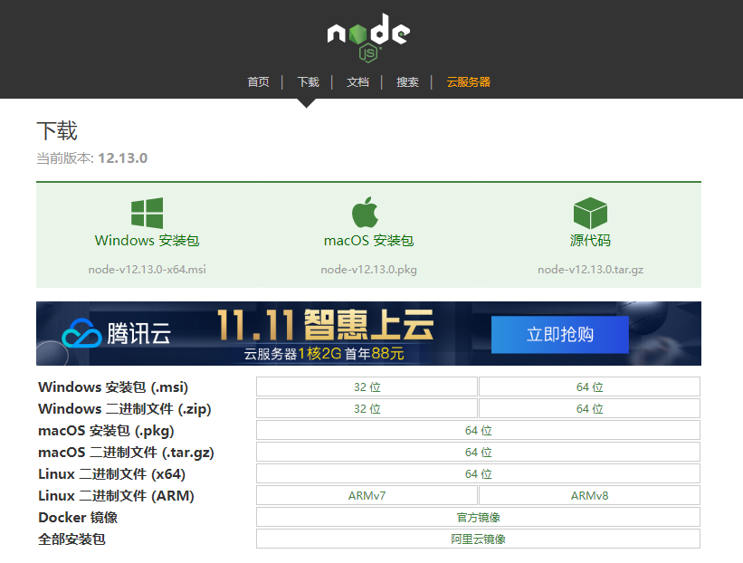
二、下载完成后，通过查看版本检查是否安装成功：
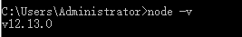
同时检查npm版本
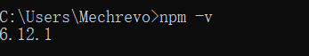
三、检查环境变量：
可以参考配jdk环境变量的经验。
这里需要注意：安装node.js后，我们需要npm（node package mananger），类似Linux的yarm命令。安装node成功后，npm用来安装vue、webpack等。接下来设置npm安装路径。
在如下图位置，创建node_cache node_global两个文件夹；
使用npm config set prefix "F:\Program Files\nodejs\node_global"
npm config set cache "F:\Program Files\nodejs\node_cache"
然后配置环境变量(略);可以用npm config get prefix检查当前的配置是否符合；
结果如下：
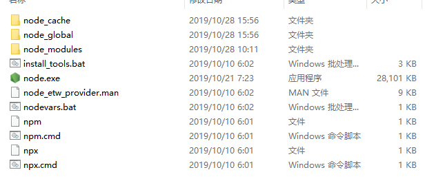
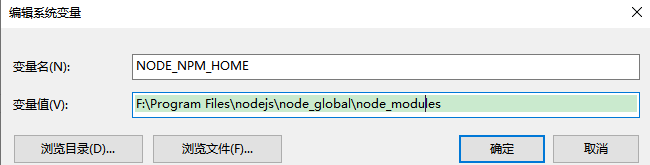
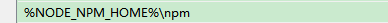
四、安装插件
由于在国内使用npm是非常慢的，所以在这里我们推荐使用淘宝npm镜像，使用
淘宝的cnpm命令管理工具可以代替默认的npm管理工具
npm install -g cnpm --registry=https://registry.npm.taobao.org
淘宝镜像安装成功之后，我们就可以全局使用vue-cli脚手架，输入命令：cnpm install --global vue-cli 回车；验证是否安装成功，在命令输入vue，出来vue的信息，及说明安装成功；
注意：同样：需要配置环境变量，将F:\Program Files\nodejs\node_global配入PATH中
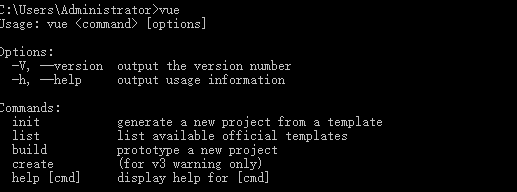
vue安装完成后，安装webpack，输入命令：cnpm install -g webpack，使用webpack -v验证，如果提示要安装webpack-cli就yes；
安装完后，会发现在node_global目录中出现了已安装的软件。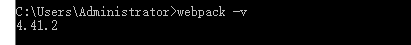
五、搭建新项目或者使用外部引入的项目；
1、搭建新项目较为简单：输入命令：vue init webpack my-project（这是项目名）出现如下问答对话，如有不同不要紧，大同小异。都是询问你是否要安装某某插件，新手示例性安装可全部选择输入no，开发项目可根据需要引入；
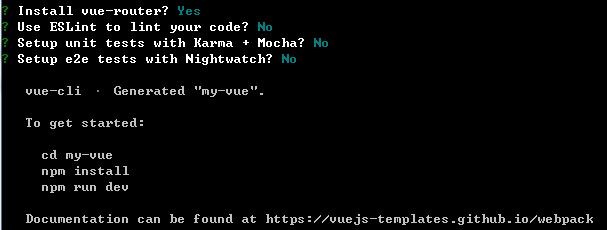
等待安装完成后，使用cnpm install 安装所有依赖包（npm install亦同）；等待安装完毕，中间可能出现安装error。具体问题，具体对待；
回到项目文件夹，会发现项目结构里，多了一个node_modules文件夹（该文件里的内容就是之前安装的依赖）
最后，npm run dev进行项目启动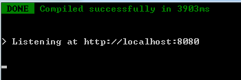
测试环境是否搭建成功
在浏览里输入：localhost:8080(默认端口为8080)
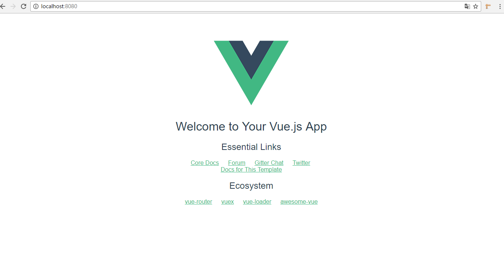
2、使用引入的项目；
引入的项目一般都是不含依赖包的项目（这样的项目在拷贝转移的时候方便），在项目的根目录下打开cmd命令窗口；
这里介绍一个小方法：
右键点击开发powershell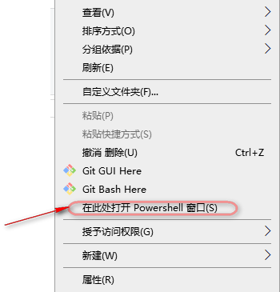
然后，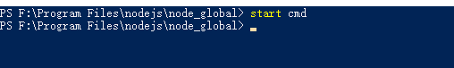，即可打开所需的cmd命令行窗口。
回到正文：在根目录输入命令：cnpm install 安装依赖包；npm run dev启动项目；如果出现问题，会较为详细的报错信息。
解决方案：考虑是否有依赖文件，并不是通过cnpm install 安装，而是从其他地方引入，从哪里得到的项目，向来源索求相关依赖即可。